CLIENTS
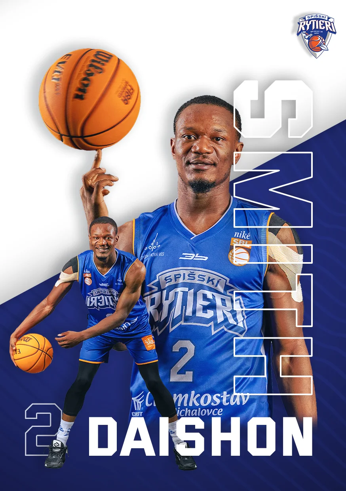
01
Spišskí
Visual Identity
→
Spišskí
rytieri
Visual Identity
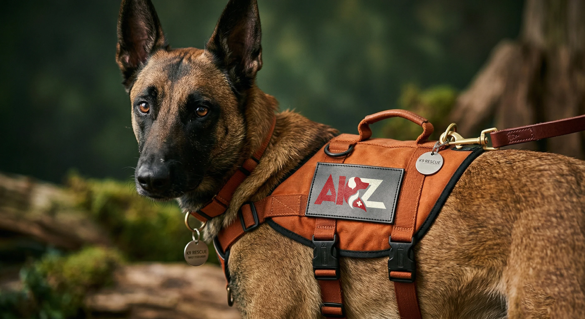
02
→
AKZ
Visual Identity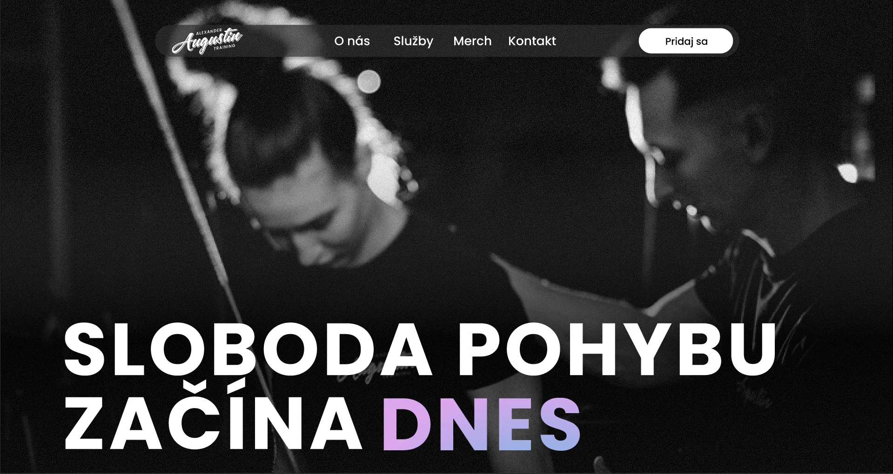
03
→
2A
Web Design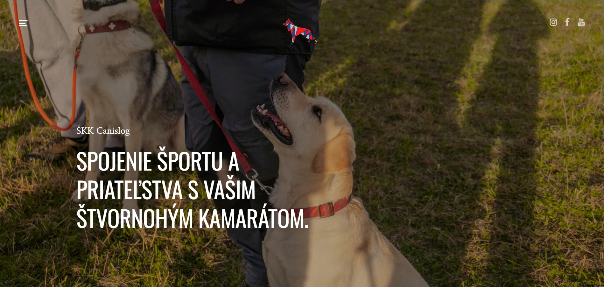
04
SKK
Web Design & Development
→
SKK
Canislog
Web Design & Development
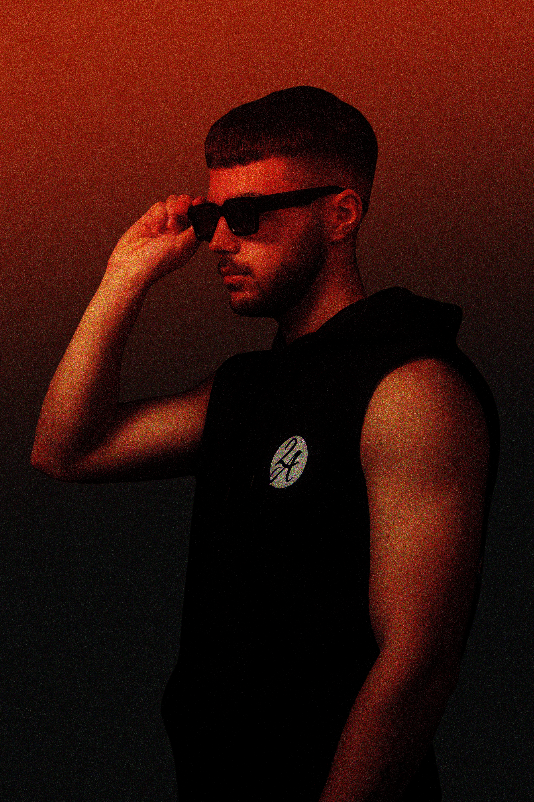
05
→
RED
Creative Post-processing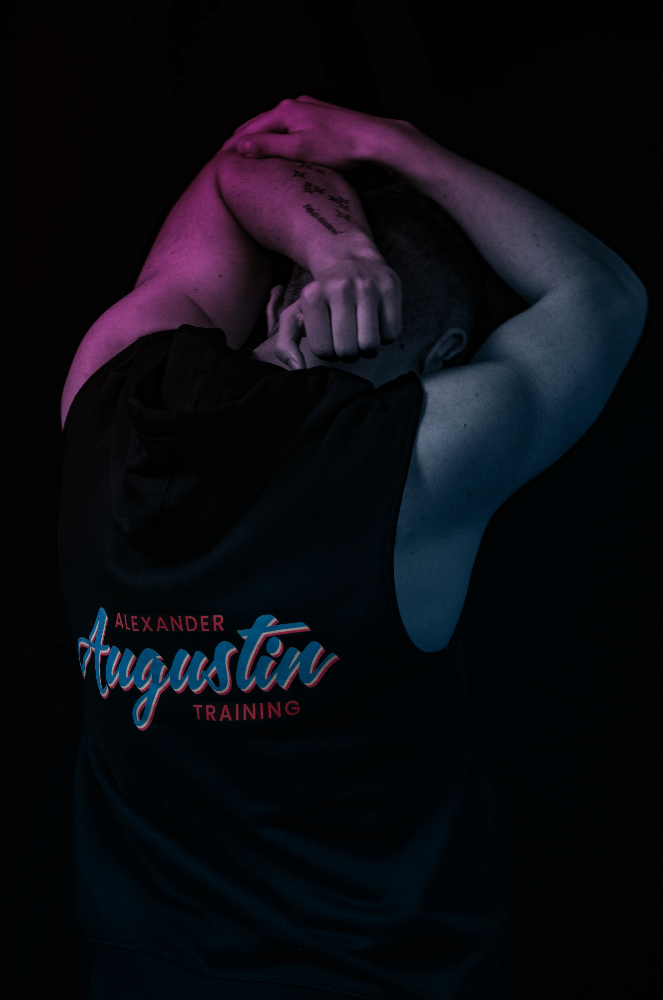
06
→
Sleevless
Creative Post-processingARTWORKS
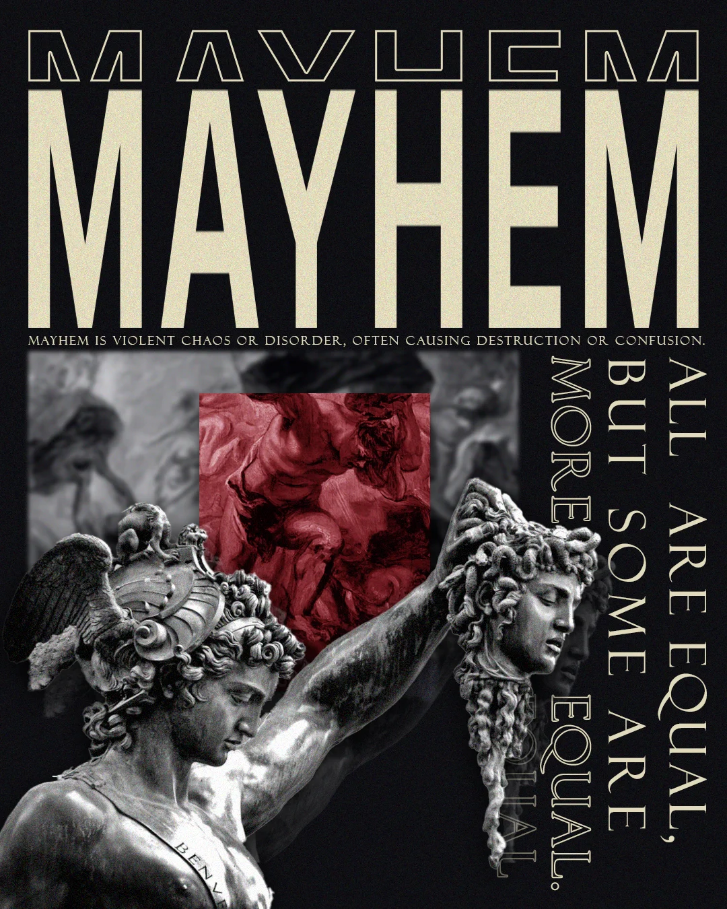
07
→
Meyhem
Artwork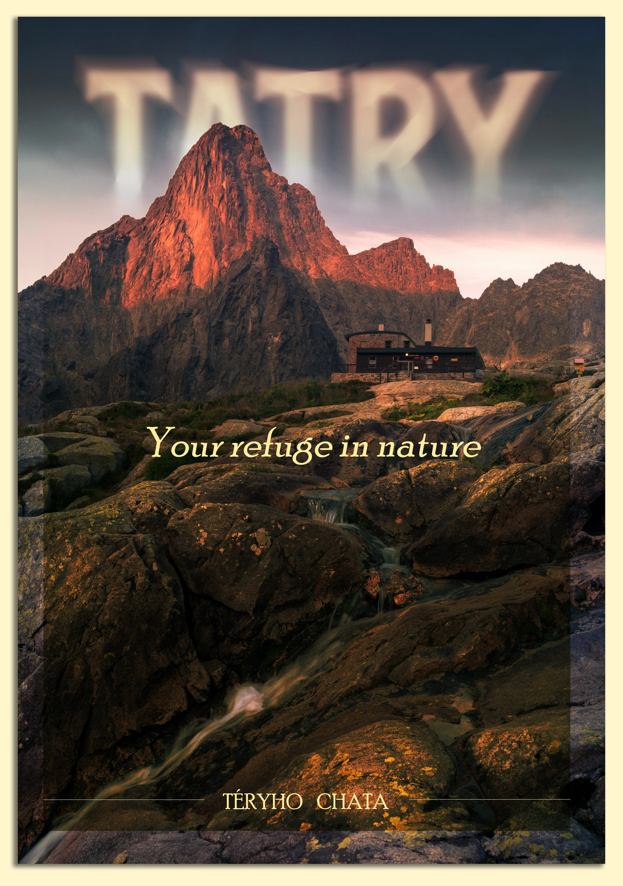
08
→
Tatry
Artwork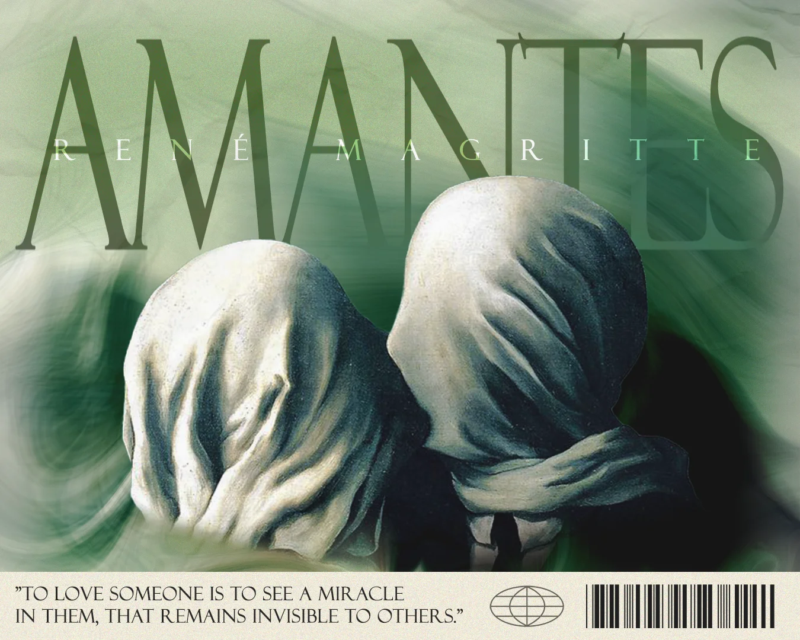
09
→
Amartes
Artwork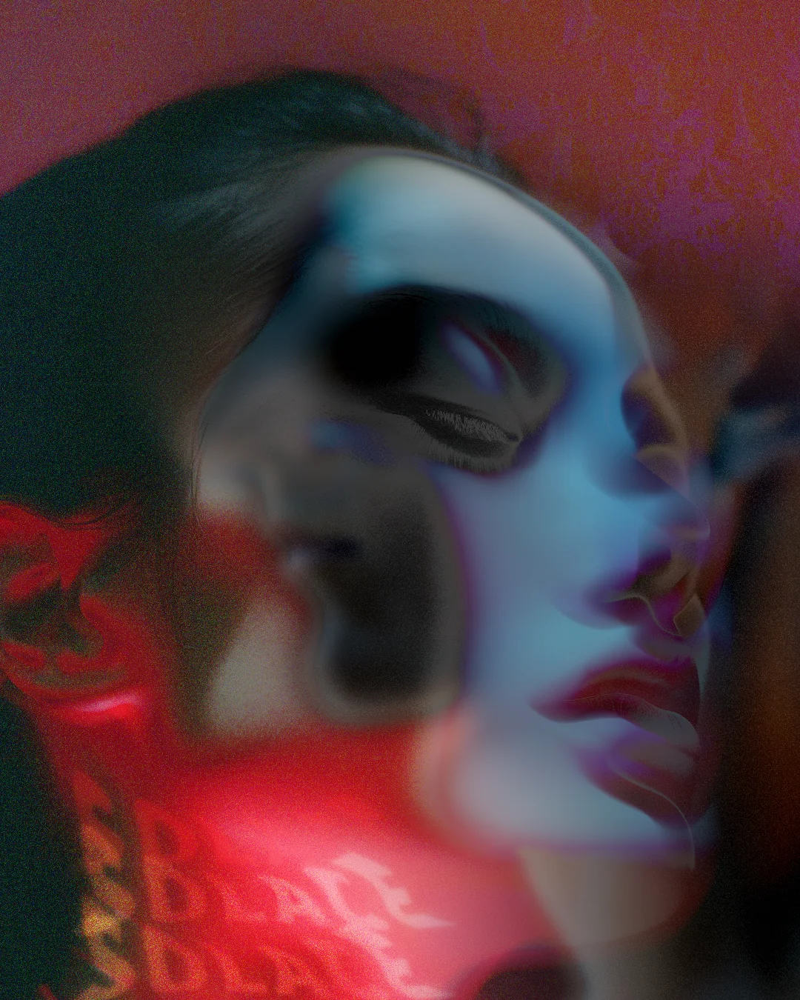
10
→
Solace
Artwork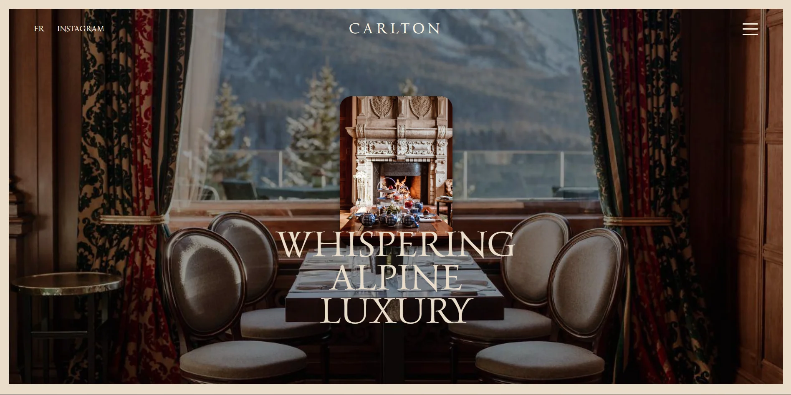
11
→